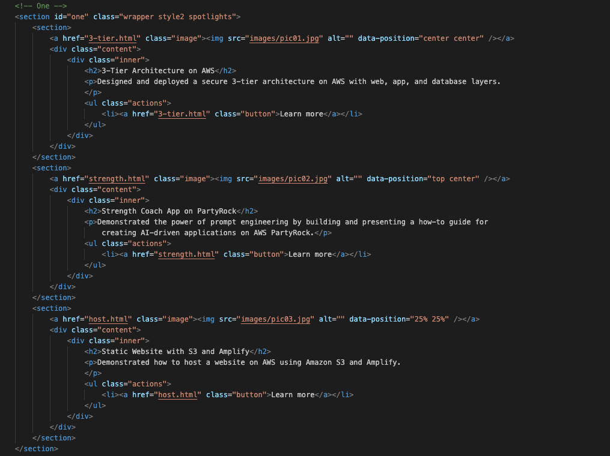
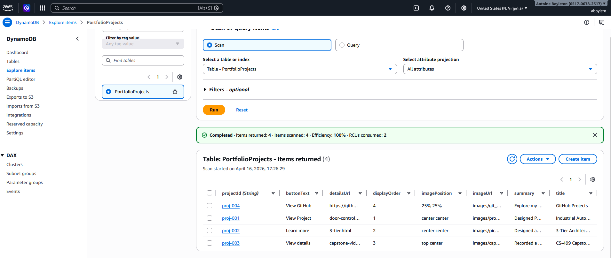
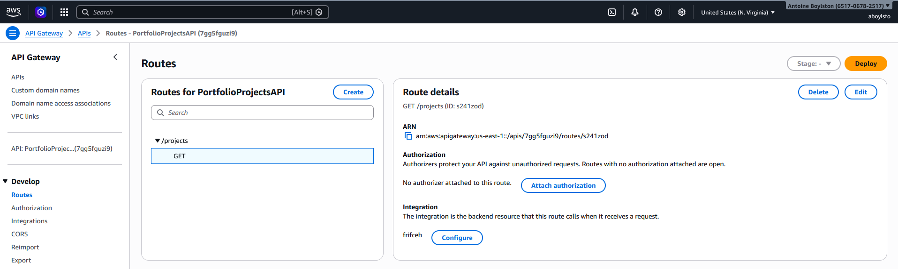
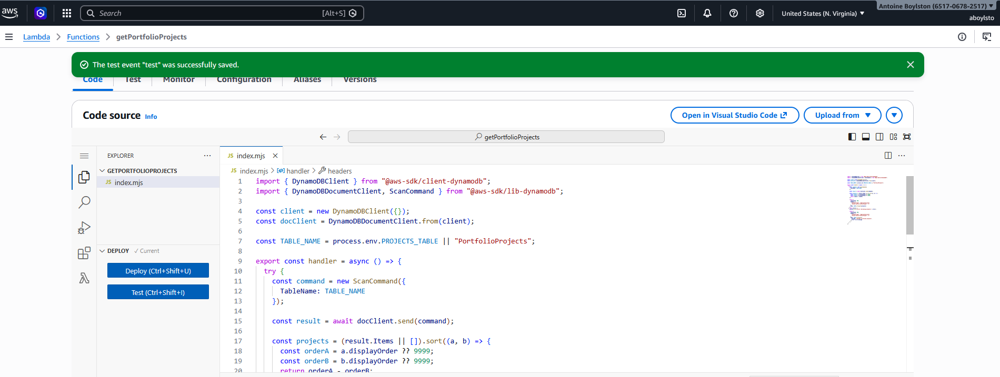
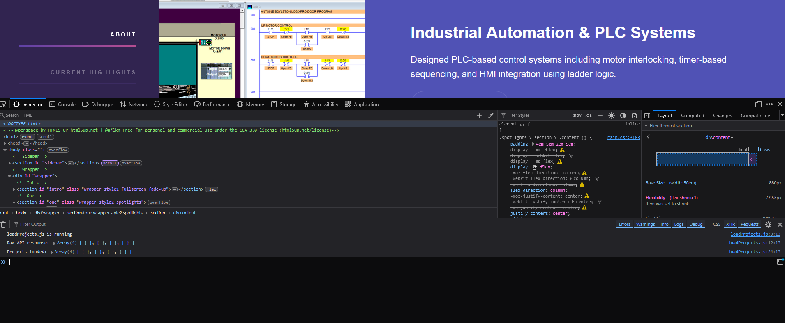

Serverless Portfolio with AWS DynamoDB & Lambda
This artifact is a professional portfolio website originally developed as a static HTML application. The site was designed to showcase projects, technical skills, and professional growth. In its original form, the Projects section relied on hardcoded HTML, requiring manual updates for any changes.
This artifact was selected because it represents a real-world application and demonstrates the transition from a static website to a dynamic, data-driven system. The enhancement showcases my ability to design scalable architectures and integrate cloud-based database solutions using modern development practices.
Initially, all project data—including titles, descriptions, images, and links—was embedded directly in the HTML. While functional, this approach limited scalability and required manual updates to the codebase whenever new projects were added.

Original static implementation with hardcoded project data in HTML.
The enhanced version transforms the portfolio into a serverless application using AWS DynamoDB, AWS Lambda, and API Gateway to create a scalable, cloud-based architecture. Project data is now stored in DynamoDB and retrieved through an API powered by AWS Lambda. This allows the frontend to dynamically render project content, significantly improving scalability, maintainability, and flexibility.

DynamoDB table storing project data used by the application.

API Gateway route exposing the /projects endpoint for retrieving data.

AWS Lambda function retrieving data from DynamoDB and returning it through the API.

Portfolio dynamically loading project data from the API and rendering it in the UI.
This enhancement aligns with Outcome 3 by demonstrating the design of a scalable, data-driven system. It supports Outcome 4 through the use of modern cloud technologies to implement a practical solution. Additionally, it addresses Outcome 5 by preparing the system for secure API integration and controlled data access.
This enhancement provided valuable experience in transitioning from static web development to dynamic, database-driven applications. One of the key lessons was understanding the importance of separating data from presentation to improve maintainability and scalability. A significant challenge involved integrating AWS services while maintaining the original design of the site. This required careful handling of API responses, debugging CORS issues, and ensuring proper deployment configurations. Overall, this process strengthened my understanding of full-stack development and serverless architecture.